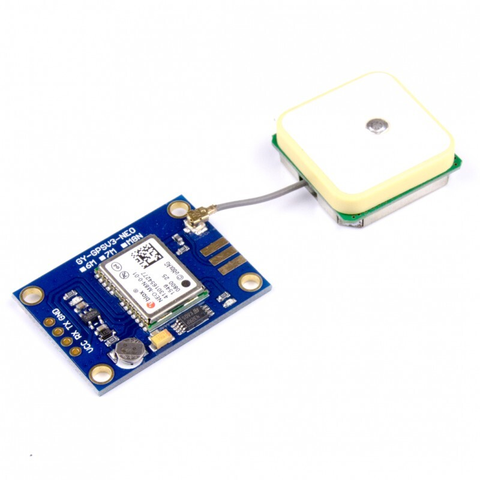

☰
Главная
Список регламентных работ
Справочная информация
Описание устранения неисправностей

Диагностика GPS модуля устройства Event Connect
Начать диагностику
Да
Нет
Тех.поддержка
На главную
Причины неисправности GPS модуля
Слабый сигнал:
Проверьте доступ к открытой местности.
Проблемы с прошивкой:
Убедитесь, что установленное ПО обновлено.
Аппаратные повреждения:
Проверьте, нет ли повреждений GPS антенны.